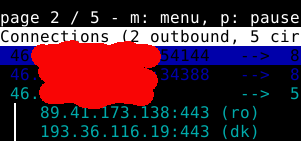
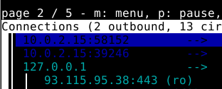
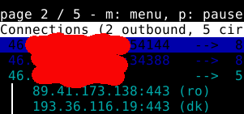
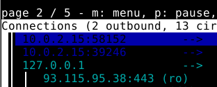

Nyx sometimes shows as source IP my public IP and sometimes internal 10.0.2.15 and 127.0.0.1 IPs.
This happens completely randomly.
I attach screenshots.
Is it normal?
Can this be an important mistake and be dangerous?



Nyx sometimes shows as source IP my public IP and sometimes internal 10.0.2.15 and 127.0.0.1 IPs.
This happens completely randomly.
I attach screenshots.
Is it normal?
Can this be an important mistake and be dangerous?


Is it normal?
Normal but not a feature that I would have added. Whonix doesn’t develop
nyx. Whonix is a Linux distribution. It installs nyx by default.
Can this be an important mistake and be dangerous?
If you post a screenshot of that without IP redacted, yes.
Thank you Patrick. I know that Nyx is not a Whonix function, but do you know why it shows these IP addresses so differently?
Check Nyx source code or try asking Nyx developer.
Just to add; even though it can seem worrying that your real IP is shown within Nyx’s interface, remember that Whonix uses a control-port-filter proxy (onion grater) that prevents abuse of the control port, by blocking commands that could be dangerous (“getinfo address” for example among others.)
So when you see your own IP, it is just local, meaning nobody else can see it. This has been a “feature” in Nyx for a while. I could be wrong, but I think it is done to show you what the complete circuit looks like from origin point to exit node. This way you can have a clear picture of Tor’s path through the network.
Thanks a lot!